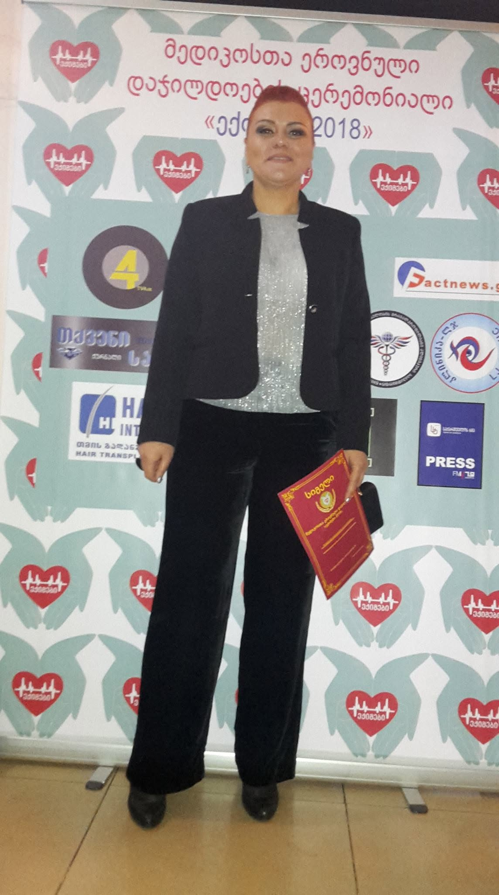

თინა კალაძე — სერთიფიცირებული რეაბილიტოლოგი 20 წლიანი პრაქტიკული გამოცდილებით
ჯანმრთელობა და უმტკივნეულო მოძრაობა ადამიანის ცხოვრების ხარისხის საფუძველია. ჩემი მიზანია, 20 წლიან პრაქტიკულ გამოცდილებაზე დაყრდნობით, თითოეულ პაციენტს შევთავაზო პაციენტზე მორგებული რეაბილიტაცია — ხერხემლისა და სახსრების ფუნქციური აღდგენა, სპორტული რეაბილიტაცია, ფიზიკური დატვირთვის შემდგომი თერაპია და ინდივიდუალური კონსულტაცია.

სპეციალისტი რეაბილიტოლოგი
ხერხემლისა და სახსრების თერაპია • ტეიპირება • სპორტული რეაბილიტაცია
ინდივიდუალური მიღება კაბინეტში
ჩემი საქმიანობის მთავარი პრინციპი ყოველთვის იყო გულწრფელი, ყურადღებიანი და პაციენტზე მორგებული რეაბილიტაცია. 20 წელზე მეტია, რაც აქტიურად ვმუშაობ პაციენტებთან, რომლებსაც აწუხებთ ხერხემლისა და სახსრების ტკივილი, კუნთოვანი დისბალანსი, პოსტტრავმული აღდგენა ან ქრონიკული დაღლილობა.
თითოეული პროცედურის დაწყებამდე ტარდება ინდივიდუალური კონსულტაცია. სამედიცინო და სამკურნალო მასაჟის, კინეზიოტეიპირების (ტეიპები), ვისცერალური ტექნიკებისა და სპორტული რეაბილიტაციის სინერგია იძლევა საუკეთესო და ხანგრძლივ შედეგს.
მიმართულია ხერხემლის, კისრისა და წელის ზონის კუნთოვანი დაძაბულობისა და ტკივილის სინდრომის მოსახსნელად.
სპეციალიზებული სპორტული რეაბილიტაცია ინტენსიური ვარჯიშის, ტრავმის ან გადატვირთვის შემდეგ კუნთოვანი ქსოვილის აღსადგენად.
კუნთების ელასტიურობის აღდგენა, რძემჟავას გამოდევნის დაჩქარება და სახსრების მობილობის გაუმჯობესება.
სპეციალური სამედიცინო ტეიპების დადება სახსრების სტაბილიზაციისთვის, შეშუპების დასაკლებად და ტკივილის შემსუბუქებისთვის.
შინაგანი ორგანოების მიკროცირკულაციის გაუმჯობესება და ბავშვთა სქოლიოზის/პოსტურალური დარღვევების პრევენცია.
პაციენტზე მორგებული რეაბილიტაციის გეგმის შემუშავება, მდგომარეობის დეტალური შეფასება და რეკომენდაციები.
20 წლიანი პრაქტიკული გამოცდილება რთულ და ქრონიკულ შემთხვევებთან მუშაობაში.
ყოველი პაციენტისთვის იქმნება პერსონალური რეაბილიტაციის გეგმა.
მასაჟის, ტეიპირებისა და ფიზიოთერაპიული მეთოდების ეფექტური სინერგია.
ყურადღებიანი და კომფორტული გარემო სრული გამოჯანმრთელებისთვის.
დაგვიკავშირდით კონსულტაციისა და დეტალური ინფორმაციისთვის
წინასწარი შეთანხმებით